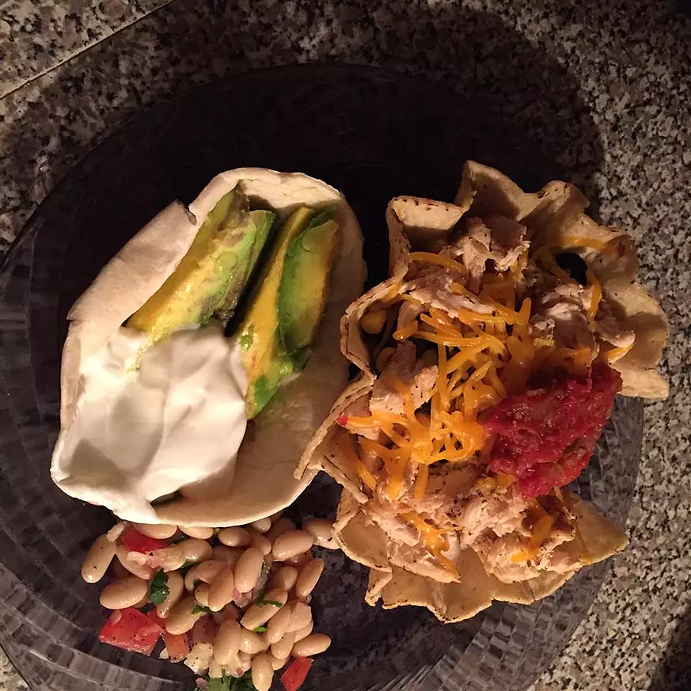

Taco

Description
The following is the description for the taco cups. It's yummy.
Are you ready?
Ingrediants
- 12 small corn tortillas (approx. 5-1/2 inches)
- 1 (12 ounce) bag DOLE® All Natural Southwest Salad Kit
- 1 cup fresh salsa, drained of excess juice
- 1 cup coarsely chopped cooked chicken
- ⅔ cup additional shredded Cheddar cheese
- ¼ cup sliced black olives, well drained
Steps
- Preheat oven to 400 degrees F.
- Warm tortillas so they are pliable. Lightly spray six, 8-ounce custard cups with nonstick cooking spray and gently press tortilla into each cup. Bake 10 minutes or until brown and crisp. Carefully remove tortillas from cups and cool on rack. Repeat for remaining tortillas.
- Stir together Taco Ranch Dressing and salsa. Moisten chicken with 1 tablespoon prepared taco dressing mixture. Combine cheeses in small bowl, set aside. Coarsely chop salad blend and combine with dressing mixture. Toss with cheeses and chicken.
- Fill each tortilla cup with heaping 1/3 cup salad mixture. Garnish with black olives, tortilla strips and one small dollop sour-cream.